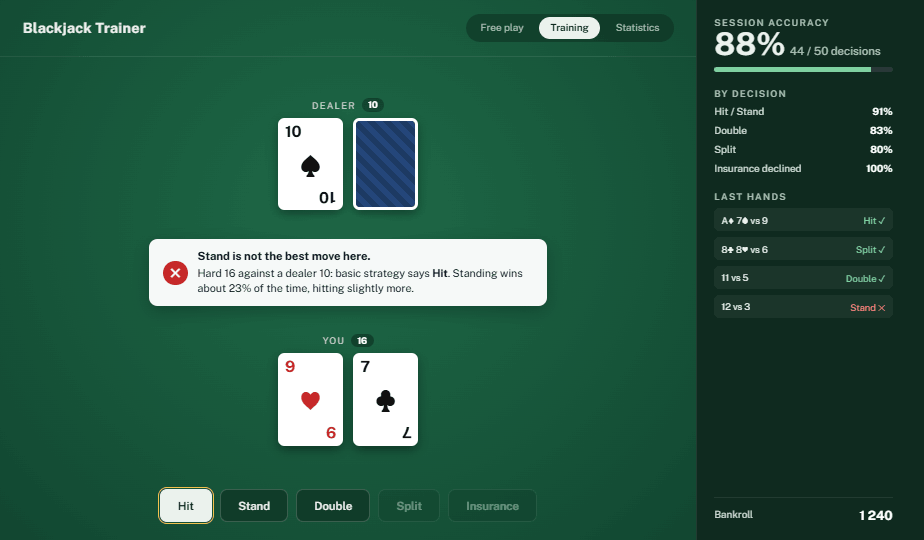

01
Blackjack trainer, a web application
- Context
- I wanted to learn web development properly, line by line, by building one complete application rather than following scattered tutorials.
- What it does
- A free-play mode, and a training mode that checks every decision (hit, stand, double, split, insurance) against basic strategy, explains the correct move and keeps session statistics.
- Methods
- Plain HTML, CSS and JavaScript with no framework, a 14-step development plan, version control with Git and hosting on GitHub Pages.
- What I'm learning
- Manipulating the DOM, handling events, and keeping the game logic separate from the display.
